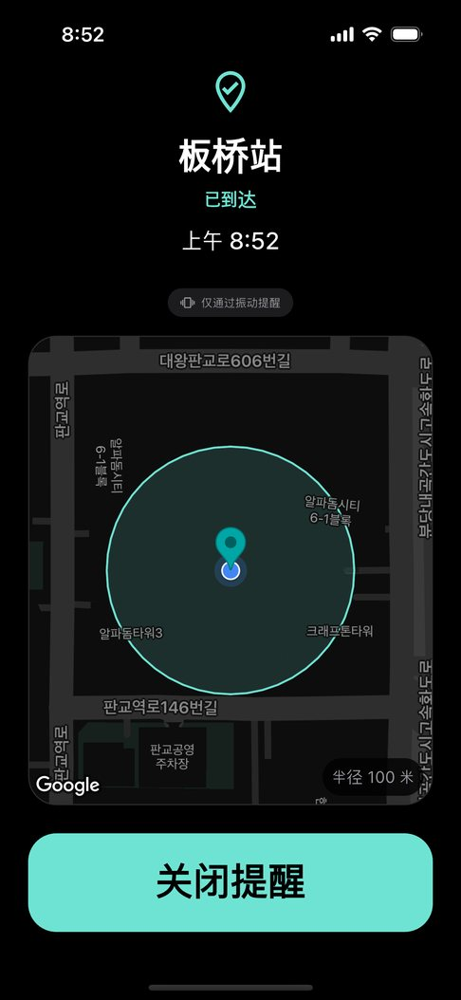

在安静的图书馆里，闹钟从扬声器响起的那一刻，所有人都会看过来。明明戴着耳机，声音却还是放了出来，这种经历比想象中常见。
因为根据手机和 App 的不同，即使连接了耳机，闹钟声音也可能同时从扬声器播放。
不用 App 也能试的办法
- 静音模式 + 振动闹钟 — 能挡住声音，但它按时间提醒，没法告诉你“到了某个地方”或“离开某个地方”。
- 智能手表振动 — 手腕上安静地提醒。把手机通知设置成同步到手表会很方便。
关键是“完全不用扬声器”
在安静的地方，需要的不是把声音调小，而是保证绝不会从扬声器发出声音。哪怕漏一次都很麻烦。
耳机位置提醒按允许列表检查已连接的设备。只有有线、USB-C、蓝牙耳机才会发声，无法确认时只振动。车载音响这类会外放的设备不在列表里。
在安静场所这样用
- 离开图书馆或办公室时也能收到提醒。出门时有要记得的事，就登记成“离开提醒”。
- 振动强度可以在弱、中、强之间选择，按场合调整。
- 在 Galaxy Watch 或 Apple Watch 上设置接收手机通知，手腕上也能感觉到。

常见问题
耳机突然断开会怎样？
提醒那一刻如果无法确认耳机连接，就不发声、只振动，不会切换到扬声器。
免费吗？
免费。应用含有广告，但正在提醒的界面上不会显示广告。